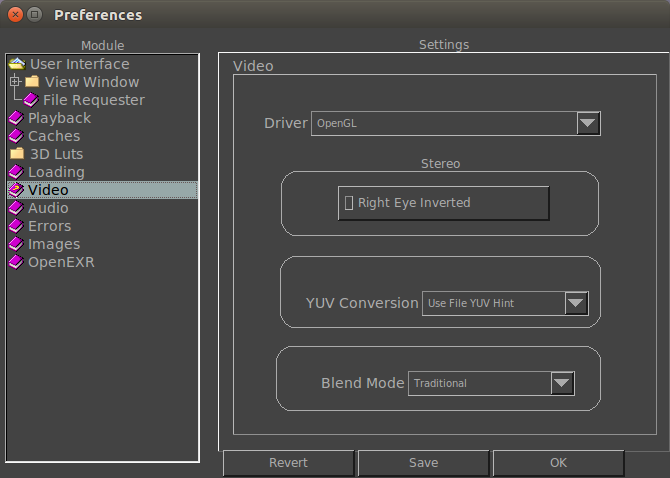

|  |
Here you can change the default driver when the viewer starts. By default, and for now, the only driver is OpenGL. Loading
This setting allows you to control how the YUV to RGB conversion is done. By default, mrViewer picks the YUV to RGB conversion from the file, but this can lead to black levels being high in some modes. By forcing a YUV conversion, you make sure that the display of the movie is as you want, regardless of what it says in the file. Saving
With this option, you can set the default video codec used for saving a movie file from mrViewer. |